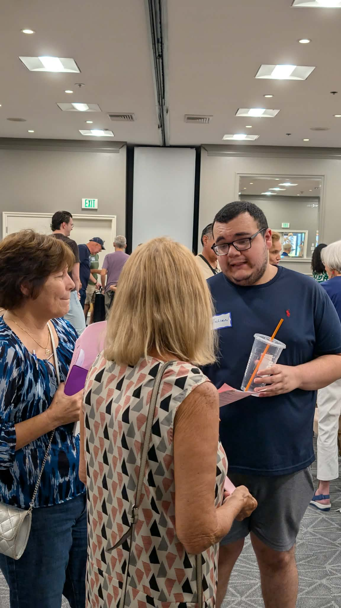

Stay connected — I'm here to listen.
Julian Herrera is a lifelong resident of La Quinta and a proud product of our local schools. As an autistic individual, his lived experience is not an afterthought to his policy positions. It's the very foundation from which he governs. He understands that true leadership means building systems that work for everyone, not just those who fit a narrow mold.
Julian is the son of an educator. His mother recently retired as an assistant principal, and that upbringing instilled in him a deep respect for public service and the transformative power of community. He believes that strong communication between the city, local schools, and community organizations is essential to creating a thriving La Quinta. Julian is proud to be the only Democrat-aligned candidate in this race, bringing a progressive, community-first vision to the City Council.
Julian wants to keep valley-trained talent in the valley. He's focused on expanding municipal internships, creating real job opportunities, and fostering a culture of responsiveness that puts residents first. He represents every corner of La Quinta through the at-large district system, bringing the same dedication and care to every neighborhood.

La Quinta · At-large representative Julian HerreraA platform rooted in community, opportunity, and justice
Julian will use the full legal might of government to compel businesses to expand hiring, creating hundreds of new jobs for La Quinta residents. He will take legal action against discrimination and ensure that every worker has a fair shot at opportunity.
Youth, government, local businesses, and community leaders all at the table.
Expand existing CTE partnerships, create direct district pipelines, and generate hundreds of new jobs.
Use the full weight of government to compel businesses to expand hiring and to take legal action when discrimination occurs.
Julian Herrera believes that effective governance requires constant, open dialogue with the people who shape our community. He's committed to establishing regular, structured communication channels with educators, community leaders, and workers to ensure that the needs of students, families, and working people are central to city policy. By bringing diverse voices together, Julian aims to build a La Quinta where everyone has a stake in our shared future.